Gruppiertes gestapeltes Säulendiagramm
GroupedStackedColumn
Zusammenfassung
In Origin können mehrere Datensätze als ein gestapeltes Säulendiagramm gezeichnet werden. Normalerweise werden diese Datensätze zusammen gruppiert. Zusätzlich ist es möglich, Untergruppierungen für gestapelte Säulendiagramme zu erstellen, wie unten im Fall von zwei Untergruppen gezeigt:
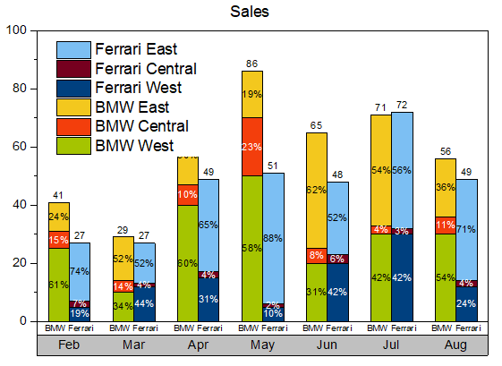
Origin-Version mind. erforderlich: 2021 SR0
Was Sie lernen werden
Dieses Tutorial zeigt Ihnen, wie Sie:
- ein gruppiertes gestapeltes Säulendiagramm mit Online-Vorlage zeichnen,
- eine Teilgruppe eines allgemeinen gestapelten Säulendiagramms erstellen, um ein gruppiertes gestapeltes Säulendiagramm zu erhalten,
- Beschriftungen zu Säulen hinzufügen,
- eine Tabelle der X-Achse für das Diagramm erstellen und benutzerdefiniert anpassen.
Gruppiertes gestapeltes Säulendiagramm erstellen
Dieses Tutorial ist mit dem Ordner Grouped Stacked Column im Projekt (<Origin-Verzeichnis>\Samples\Tutorial Data.opj) verbunden.
Hinweis: Sie können auf dieses Beispieldiagramm auch durch einen Doppelklick auf das Miniaturbild unter dem Diagrammbeispiel Grouped Stacked Column unter den Säulen- und Balkendiagrammen im Lernzentrum zugreifen (Hilfe: Lernzentrum im Menü oder über die Taste F11) .
Es gibt zwei Methoden, um ein gruppiertes gestapeltes Säulendiagramm zu erstellen:
- Seit Origin 2021 bietet Origin viele Online-Vorlagen an. Sie können die Vorlage "Side-by-side Stacked Columns" aus dem Vorlagencenter herunterladen und sie verwenden, um ein gruppiertes gestapeltes Säulendiagramm direkt zu erstellen.
- Natürlich können Sie ein gruppiertes gestapeltes Säulendiagramm auch immer noch über ein allgemeines gestapeltes Säulendiagramm erstellen.
Methode 1: Online-Vorlage verwenden
- Markieren Sie die Spalten col(B) ~ col(G) und wählen Sie im Menü Zeichnen: mit Template, um die Vorlagenbibliothek zu öffnen. Klicken Sie auf die Schaltfläche Vorlagencenter öffnen in der oberen rechten Ecke.
- 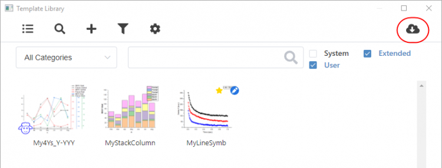
- Das Vorlagencenter wird geöffnet. Suchen Sie nach der Online-Vorlage "Side-by-side Stacked Columns" und laden Sie sie herunter.
- 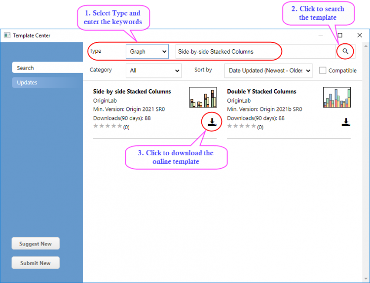
- Nachdem die Vorlage heruntergeladen ist, schließen Sie das Vorlagencenter. Diese Vorlage wird in der Vorlagenbibliothek aufgelistet. Wählen Sie sie aus und klicken Sie auf die Schaltfläche Diagramm, um ein Diagramm zu erzeugen.
- 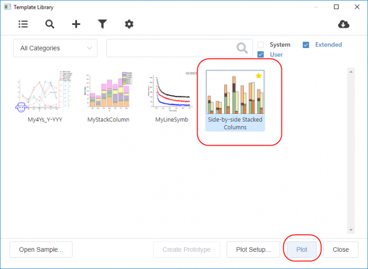
- Das erzeugte Diagramm sieht folgendermaßen aus:
- 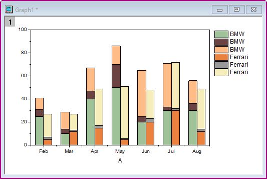
Methode 2: Teilgruppe der gestapelten Säulen erstellen
- Aktivieren Sie das Arbeitsblatt Sheet1, markieren Sie die Spalten col(B)~col(G) und wählen Sie Zeichnen > Balken, Kreis, Fläche: Gestapelte Säulen im Menü, um ein gestapeltes Säulendiagramm zu zeichnen:
- 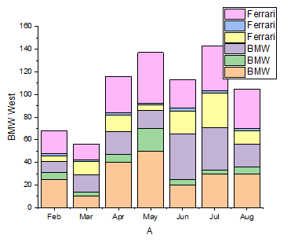
- Klicken Sie zum Öffnen des Dialogs Details Zeichnung doppelt auf das Säulendiagramm. Wählen Sie auf der Registerkarte Gruppe die Option Nach Größe für Untergruppierung und setzen Sie die Größe der Untergruppe auf 3.
- 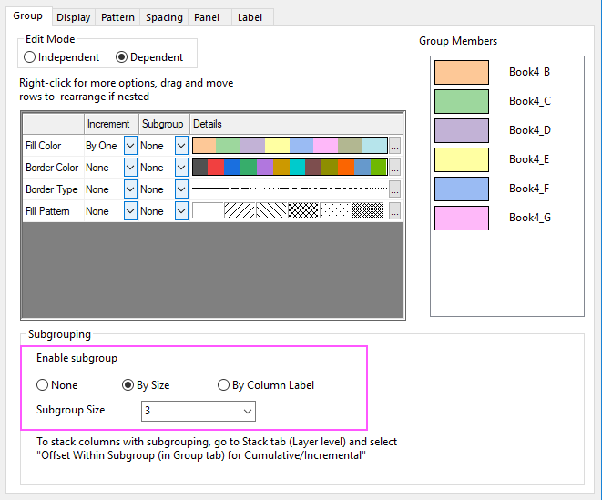
- Wählen Sie Layer1 im linken Bedienfeld des Dialogs Details Zeichnung und klicken Sie auf die Registerkarte Stapeln. Aktivieren Sie das Kontrollkästchen Versatz innerhalb Untergruppe (Registerkarte Gruppe) für Kumulativ/Inkrementell. Klicken Sie auf die Schaltfläche Anwenden.
- 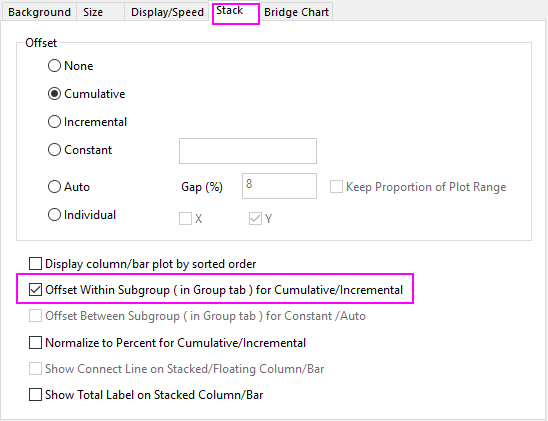
- Klicken Sie auf OK, um den Dialog zu schließen. Wählen Sie Grafik: Neu skalieren, um alle anzuzeigen im Hauptmenü, um den Layer neu zu skalieren. Das erzeugte Diagramm sieht folgendermaßen aus:
- 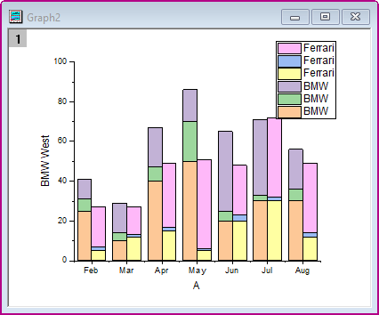
Beschriftungen für Säulen hinzufügen
- Klicken Sie auf die Säule und in der Minisymbolleiste auf die Option Datenbeschriftungen zeigen auf der Registerkarte Gruppe, um die Datenbeschriftungen auf den Säulen zu zeigen.
- 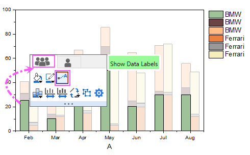
- Klicken Sie auf die Beschriftung und dann in der Minisymbolleiste auf die Schaltfläche Beschriftungsquelle, um Prozent in der Auswahlliste auszuwählen.
- 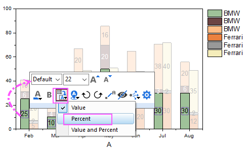
- Bitte beachten Sie, dass Sie, um die Beschriftungen aller Säulen zusammen mit der Minisymbolleiste zu ändern, die erste Zeichnung in der aktuellen Layergruppe auswählen müssen. In diesem gestapelten Säulendiagramm sollte die untere Zeichnung innerhalb der ersten Teilgruppe die erste Zeichnung sein.
- Klicken Sie zum Öffnen des Dialogs Details Zeichnung doppelt auf den Diagrammlayer. Wählen Sie Layer1 im linken Bedienfeld des Dialogs Details Zeichnung und klicken Sie auf die Registerkarte Stapeln. Aktivieren Sie Beschriftung der Summe für gestapelte Säulen-/Balkendiagramme zeigen.
- 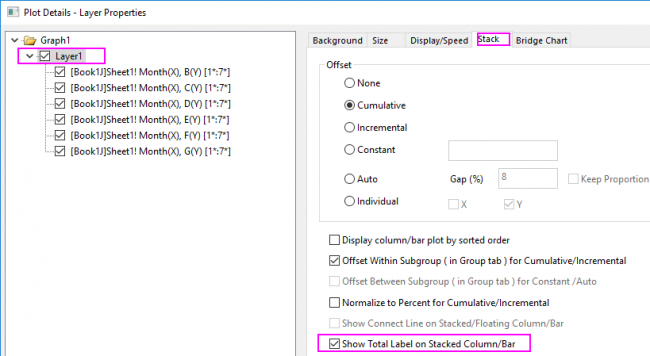
- Sie erhalten das Diagramm mit Beschriftungen, wie unten zu sehen:
- 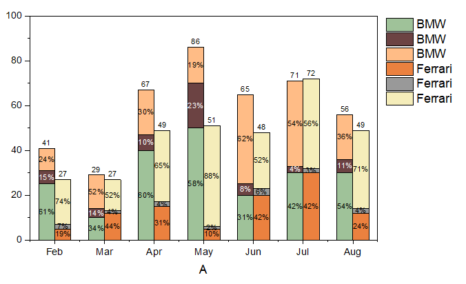
Tabelle für Hilfsstrichsbeschriftungen der X-Achse erstellen
- Um zwei Zeilen der Hilfsstrichsbeschriftung für die X-Achse zu erstellen, klicken Sie doppelt auf die Hilfsstrichsbeschriftung der X-Achse, um den Dialog Achsen zu öffnen.
- Wählen Sie auf der Registerkarte Beschriftung der Hilfsstriche das Symbol Unten.
- Setzen Sie auf der Registerkarte Format die Schriftgröße auf 16
- Aktivieren Sie auf der Registerkarte Tabelle das Kontrollkästchen Aktivieren und setzen Sie die Anzahl der Zeilen auf 2. Das Symbol Unten wird im linken Bedienfeld in Unten 1 und Unten 2 umbenannt.
- Legen Sie das Tabellenlayout, wie unten zu sehen, fest:
- 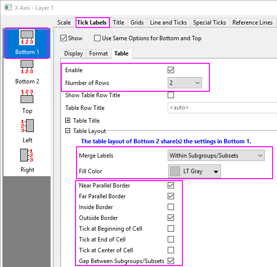
- Wählen Sie Unten 2 und legen Sie den Datensatzname mit [Book4]Sheet1!H auf der Registerkarte Anzeige fest. Setzen Sie die Schriftgröße auf der Registerkarte Format auf 12. Die Zeile der Hilfsstrichsbeschriftung nimmt die Autonamen aus der Arbeitsblattspalte label (Y) an.
- Legen Sie das Tabellenlayout, wie im Dialog unten zu sehen, fest.
- 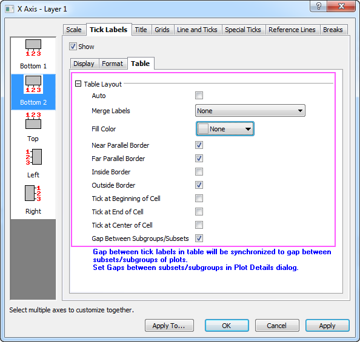
- Klicken Sie auf OK, um den Dialog zu schließen. Verschieben Sie das Legendenfeld innerhalb des Layers. Klicken Sie auf das Legendenfeld und dann in der Minisymbolleiste auf die Schaltfläche Übersetzungsmodus der Diagrammlegende, um Langname in der Auswahlliste auszuwählen.
- Das erzeugte Diagramm sieht folgendermaßen aus:
- 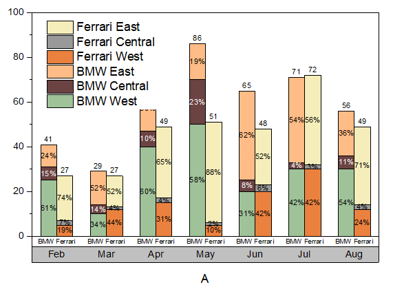
Spaltenfarbe benutzerdefiniert anpassen
- Klicken Sie zum Öffnen des Dialogs Details Zeichnung doppelt auf das Säulendiagramm. Klicken Sie auf der Registerkarte Gruppe auf die Schaltfläche in der Spalte Details der Zeile Füllfarbe. Der Dialog Farben erzeugen wird geöffnet.
- Wählen Sie die erste Farbe, setzen Sie die Werte für Rot, Grün und Blau auf 165, 196 und 0 und klicken Sie dann auf die Schaltfläche Ersetzen, um diese Farbe zu der Farbliste hinzuzufügen.
- Erstellen Sie mit Hilfe dieser RGB-Werte fünf weitere benutzerdefinierte Farben: (243, 62, 12), (243, 200, 30), (0, 64, 127) (119, 0, 31) und (124, 191, 243).
- Wählen Sie alle Farben unter Farbe(6) aus und klicken Sie auf die Schaltfläche Löschen, um diese Farben zu entfernen, so dass Sie nur die sechs der gerade erstellten benutzerdefinierten Farben haben. Klicken Sie auf OK, um den Dialog Farben erzeugen zu schließen.
- 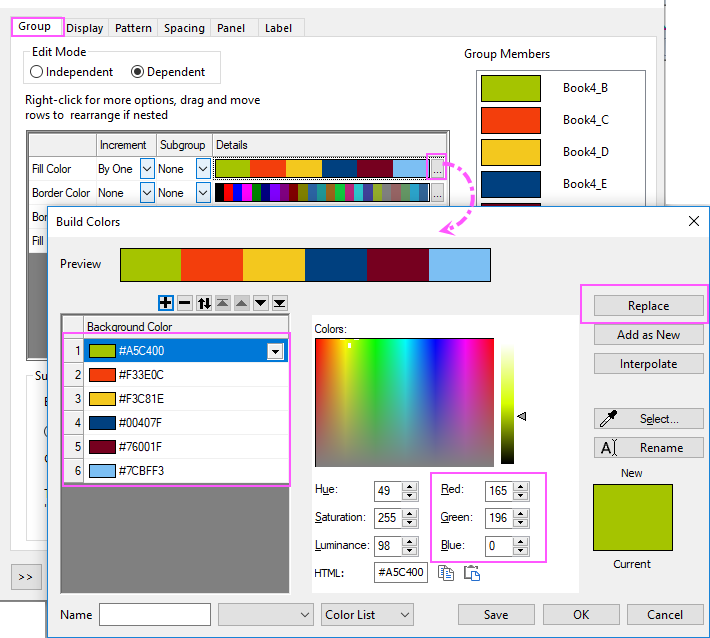
- Klicken Sie mit der rechten Maustaste auf einen leeren Bereich des Diagrammfensters und wählen Sie Layertitel hinzufügen/modifizieren im Kontextmenü. Geben Sie Sales als Layertitel ein.
- Verändern Sie die Größe nach Bedarf mit Hilfe der Auswahlelemente. Am Ende erhalten Sie das Diagramm, das die Zusammenfassung zeigt.